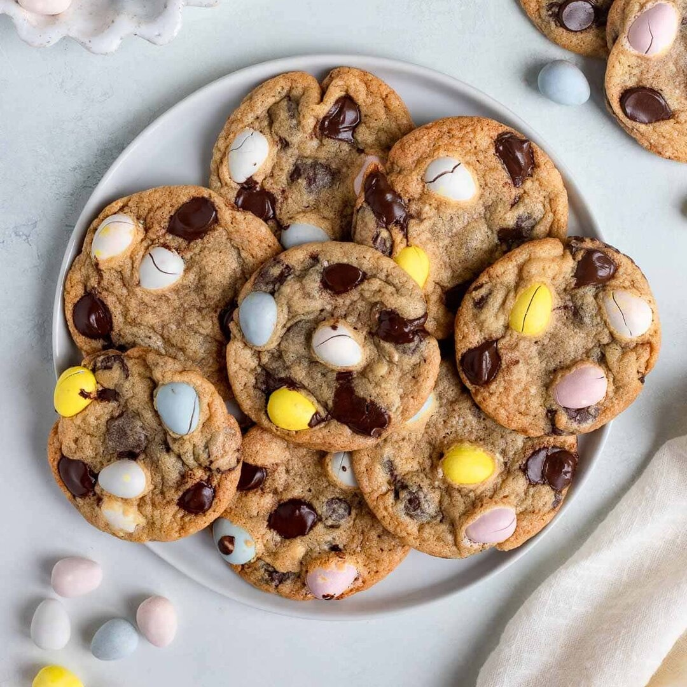

Home
Chocolate Chip Cookies

Description
Chocolate Chip Cookies are the ultimate comfort food, loved by generations
for their chewy centers, crisp edges, and gooey chocolate chunks. This
classic American dessert is easy to make and endlessly customizable,
whether you prefer them soft and thick or thin and crispy. Perfect with a
glass of milk, these cookies are a staple for bake sales, holidays, and
everyday treats.
Their irresistible aroma and timeless flavor make them a favorite for kids
and adults alike.
Ingredients
- 1 cup (2 sticks) unsalted butter, softened
- 3/4 cup granulated sugar
- 3/4 cup packed brown sugar
- 2 large eggs
- 1 tsp vanilla extract
- 2 1/4 cups all-purpose flour
- 1 tsp baking soda
- 1/2 tsp salt
- 2 cups semisweet chocolate chips
Steps
- Preheat oven to 375°F (190°C).
-
In a large bowl, cream together the butter, granulated sugar, and brown
sugar until light and fluffy.
- Beat in eggs one at a time, then stir in vanilla.
-
In a separate bowl, whisk together flour, baking soda, and salt.
Gradually blend into the creamed mixture.
- Stir in chocolate chips.
- Drop by rounded tablespoonfuls onto ungreased baking sheets.
- Bake for 9–11 minutes, or until golden brown.
-
Cool on baking sheets for 2 minutes, then transfer to wire racks to cool
completely.